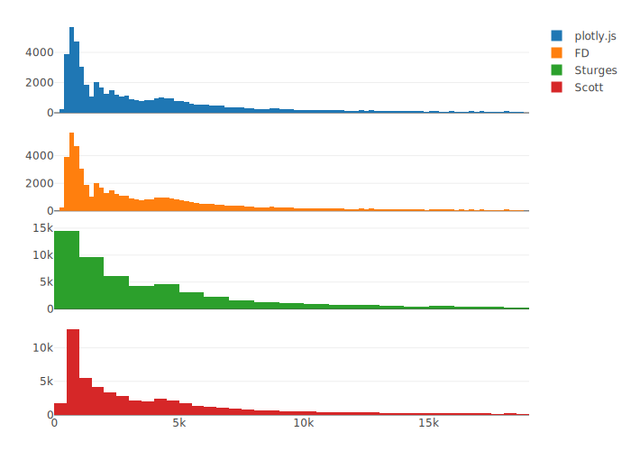

第 10 章 交互式图形
10.1 plotly
library(plotly, warn.conflicts = FALSE, quietly = TRUE)
p1 <- plot_ly(diamonds, x = ~price) %>% add_histogram(name = "plotly.js")
price_hist <- function(method = "FD") {
h <- hist(diamonds$price, breaks = method, plot = FALSE)
plot_ly(x = h$mids, y = h$counts) %>% add_bars(name = method)
}
subplot(
p1, price_hist(), price_hist("Sturges"), price_hist("Scott"),
nrows = 4, shareX = TRUE
)Orca (Open-source Report Creator App) 软件针对 plotly.js 库渲染的图形具有很强的导出功能，安装 Orca 后，plotly::orca 函数可以将基于 htmlwidget 的 plotly 图形对象导出为高质量静态图片，支持导出 png、pdf 和 svg 等格式。

图 10.1: 直方图